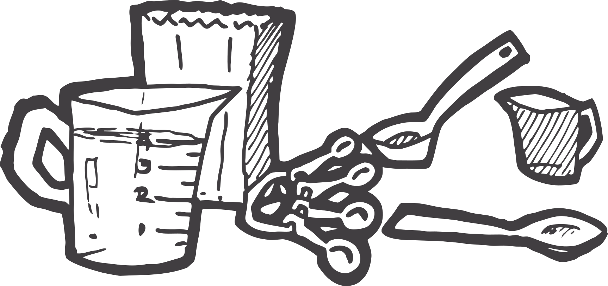

The reconciled direction: an editorial scrapbook. Texture, hard shadows and rotation live only on brand surfaces — the header, tags, illustrations and empty states. Reading and input surfaces are flat, high-contrast and quiet. Companion to the prototype, breakpoint boards and the audit doc.
Palette doc is the source of truth. Blue is dominant; yellow is reserved for tags and the wordmark; orange for small accents only. All text pairs meet 4.5:1.
Exactly two families. Young Serif (variable, self-hosted) — Bold for the wordmark, Regular for all display headings and titles; Instrument Sans for everything else. Black Han Sans and Average are retired — the wordmark is Young Serif Bold, yellow on the orange header, with the hourglass icon in the lockup and a −0.4° rotation. Negative letter-spacing on serif display sizes only. Max line length ~70ch.
Brand card
Light-blue construction paper (rgb(205,225,238)) with the cardboard texture multiplied in; 3px radius; hard shadow 0 4px 4px rgba(0,0,0,0.25). Recipe cards and title strips. Photos get the scanned-print overlay directly. The login/reset card is the same recipe-card treatment in brand yellow (rgba(239,218,107,0.78)).
Reading / input surface
Flat white, no texture, no shadow. Ingredients, method, every form field group.
Brand bar
Brand orange (rgb(216,74,26)) with paper texture multiplied in. Global header only.
Note post-it
Notes are thin post-its stuck to the page: cardboard texture over paper colour, square corners, panel shadow 1px 4px 2px rgba(0,0,0,0.25), ±0.4° rotation. Colours alternate yellow → blue → orange (rgba 0.78 washes of rgb(239,218,107) / rgb(205,225,238) / rgb(240,178,148)) in list order.
Tag chip
vegetarianCardboard-textured yellow, 4px radius, 1px hard shadow. The one “scrapbook” element allowed inside content.
Radii: 12px cards/dialogs · 8px inputs/buttons · 4px chips. Interactive height ≥44px. Focus: 2px #1F6590 outline, 2px offset, global.
Brand action (cardboard-textured yellow, hard shadow) is reserved for the header’s “Add recipe”, Save and Edit recipe — at most one per view. Everything else uses flat primary/secondary. All paper buttons and chips share the physical press model: hover lifts (−1px translate, deeper offset shadow), press flattens (+1px translate, shadow removed).
Tags are user-generated and unbounded, so tag pickers never render the full list as a checkbox grid. Two patterns:
Recipe form — combobox
Selected tags are yellow paper chips with ×. One search field filters suggestions (12 most-used, with counts); an unmatched query offers a dashed “Add” chip; Enter creates.
Filter panel & sheet — searchable list
A “Find a tag” input above the scrolling checkbox list. Selected tags pin to the top; the rest sort by recipe count, then alphabetically. Empty results show “No tags match”. Active filters echo below the toolbar as removable yellow tag chips.
Cards and chips behave like physical paper. All motion respects prefers-reduced-motion.
Toasts: success on green (#EAF3E6 / #4E9A5C / #1C4A26) for saved/created/favourite/sign-in; danger on red (#FFEDEF / #EBA9AF / #8C1D29) for deletions; neutral ink for everything else. 2.6s, bottom-centre.
The prototype hides these from public users with client-side state. In the deployed product every one of them must be enforced server-side — hiding a control is not authorisation.
How much scrapbook each surface is allowed. None → flat and functional; expressive → texture, rotation, illustration.

logo.svg — full header lockup (chef-boy icon + wordmark, yellow), replaces the typeset wordmark; logo-no-icon.svg — wordmark alone (blue), login/reset cards and docs; star.svg — favourite star; chef.svg — login and empty library; vieja.svg — the “no recipes match” empty state; cookware.svg — missing photos; little-guy.svg — favicon. All are true vector re-exports (paths, no embedded bitmaps); chef/cookware are recoloured to ink rgba(41,39,40,0.85).contrast(1.18) saturate(0.92) brightness(0.98) plus a screen-blended overlay of photo-grunge.jpg tinted rgba(11,122,249,0.22) at 60% opacity.aria-hidden when decorative.currentColor; motion is fades ≤200ms and respects reduced-motion.